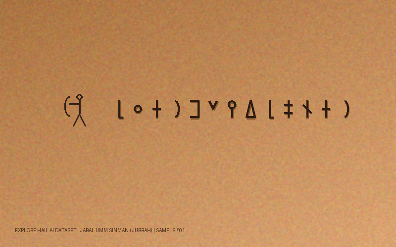

📷 صورة النقش الصخري
انقر لاختيار أي صورة نقش من جهازك
يدعم صور الكاميرا والهاتف والإنترنت (JPG, PNG)

📜 نتيجة التحليل والترجمة
🔤 الحروف الثمودية المستخلصة (Detected Thamudic Glyphs)
Transliteration: [ l ʿ z r b n w d l h ṯ t r ]
🇸🇦 الترجمة العربية المعاصرة
لعازر بن وادل، في حماية عثتر وسلامة الصيد.
🇬🇧 English Translation
By Azar son of Wadel, under the protection of Athtar, for safe hunting.
🏛️ التفسير الأثري والسياق التراثي
نقش تذكاري ثمودي يعود للألفية الأولى قبل الميلاد من جبل أم سنمان بجبة، يوثق اسم الصائد 'عازر' وتضرعه للسلامة والبركة في رحلة الصيد بمحاذاة بحيرة جبة القديمة.